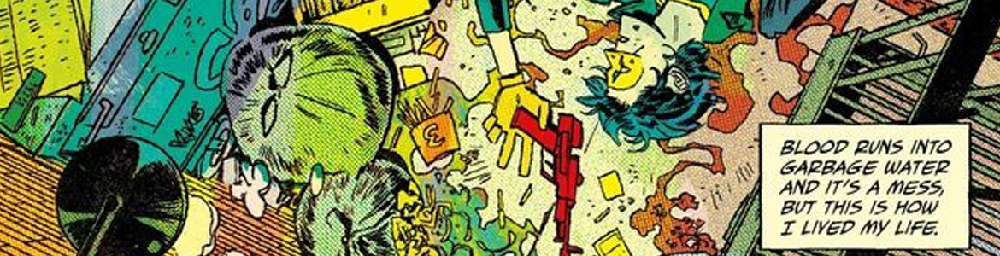

Stop Being Mean To This Album, It Isn't Even Bad
.png)
• Published 21/01/2025
I am a firm believer that American rock band My Chemical Romance has no bad albums. From the minute they started they were out to make good music, and they did. That is, until, they released Danger Days: The True Lives of The Fabulous Killjoys, and a lot of people thought the album was a flaming ball of trash.
I think the rumour of emos hating colour is true, because this album is full of it, well, sort of. Much like the other albums MCR released prior, there was a world attached to it, although this time, it was more front and centre. Danger Days was a comic in its inception, which got turned into an album, which then got turned into 2 comics. It had the usual MCR charm, but visibly and sonically...different. It was slightly more pop-punk, which can lean more into being commercial, although I don’t think a song like DESTROYA was getting played on the radio.
Now, I like the belief that “if you get it, you get it, and if you don’t, you don’t” but not for this album. I genuinely think that a lot of people that dislike the album for not being “MCR enough” can’t read. As I mentioned, Danger Days was once an idea for a comic, and that idea followed into the album. It takes place in a dystopian comic world with an evil corporation (Better Living Industries, or BL/IND) that’s trying to make everyone happy by essentially turning them into colony drones. You can either comply or get turned into a weird looking, brainless vampire, called a draculoid. A group of kids (played by the band, so not exactly kids, they were all like 30 when the album came out) called The Fabulous Killjoys fights against BL/IND because corporations are jackasses. This was all conveyed via the music videos, and also the lyrics, but again, it’s either that people didn’t bother reading the lyrics, or they couldn’t understand Gerard Way’s vocals, which is fair, neither did I at the beginning.

I think this album is underrated because it isn’t appreciated as an experience. It’s fun, it’s anti-establishment, anti-censorship and comes with a rich world, although I do feel like there’s room for expansion. The Killjoys never really get an actual personality, because they all die by the end of the album, and the comics never expand on them either, instead choosing to focus on the girl that the Killjoys rescued. The second comic, although better writing wise, in my opinion, isn’t that connected to the album. It keeps BL/IND and its tyrannical mission to make everything “good”, with the evil acts being bumped up to a thousand when they remove all mentions of civil rights movements in schools (wow, just like the United States of America!) and bring the main character’s dead girlfriend back to life to try and persuade him to join their cause, but the cast is almost completely brand new. Besides the comics, there’s also an EP release, The Mad Gear and Missile Kid, consisting of 3 songs that are meant to show what songs in their universe sound like, also the CD is $400 on the resale market. It only got released in a box set, once. I’m not mad that Bullets was easier to get than an EP that was released in 2019.
I don’t blame people for not fully understanding the camp and universe behind Danger Days, but I do wish people were a little nicer to it. It’s got a lot to offer, especially in the second comic (The True Lives of The Fabulous Killjoys: National Anthem). Also MCR should stop talking down on it so much. I know it flopped, guys, but it’s not bad. And with that, here’s my ranking of the tracks:
Danger Days: The True Lives of the Fabulous Killjoys (specifically the songs, although I love the spoken parts of the album, they’re integral to the listening experience!)
1. The Only Hope For Me Is You
2. DESTROYA
3. Planetary (GO!)
4. Save Yourself, I’ll Hold Them Back
5. Na Na Na (Na Na Na Na Na Na Na Na Na)
6. Vampire Money
7. Bulletproof Heart
8. Party Poison
9. Summertime
10. SING
11. S/C/A/R/E/C/R/O/W
12. The Kids from Yesterday
The Mad Gear and Missile Kid
1. FTWWW
2. Mastas of Ravenkroft
3. Black Dragon Fighting Society
Also there’s a random standalone song that wasn’t in the albumI guess was released alongside Na Na Na since they share the same cover art) called Zero Percent. It’s a great song! One of my favourites from this entire world of music, definitely listen to it!
- Where to listen
-
 Apple Music
Apple Music
-
 Buy the CD
Buy the CD
-
 Spotify
Spotify
-
 Youtube Music
Youtube Music